O Santo Terço, no seu celular
Um aplicativo simples e bonito para rezar o terço, em português e em latim. Cada toque passa uma conta: você nunca mais perde a conta.
- Português e latim
- Mistérios do dia
- Pinturas e meditações
- Funciona no navegador
Veja em 2 minutos como funciona
Como funciona
É muito fácil. Não precisa baixar nada, nem criar conta.
Abra o aplicativo
Toque no botão “Abrir o Santo Terço”. Ele já abre com os Mistérios do dia.
Toque no terço
Cada toque em qualquer lugar do terço passa uma conta.
Reze tranquilo
A conta que brilha mostra onde você está. Se precisar, veja o texto da oração.
Tudo o que você pode fazer
Um passo a passo simples de cada parte do aplicativo.
Contar as contas
Um toque, uma conta
Toque em qualquer lugar do terço para passar para a próxima conta. A conta dourada que brilha mostra onde você está.
No meio do terço aparecem o nome da oração e a contagem, por exemplo “2 de 10”.
Tocou sem querer? O botão ‹ Voltar desfaz.
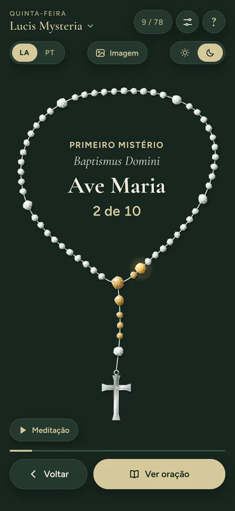
Ler a oração
Em latim ou em português
Não sabe a oração de cor? Toque em Ver oração e o texto aparece.
No alto da tela, escolha LA para latim ou PT para português.
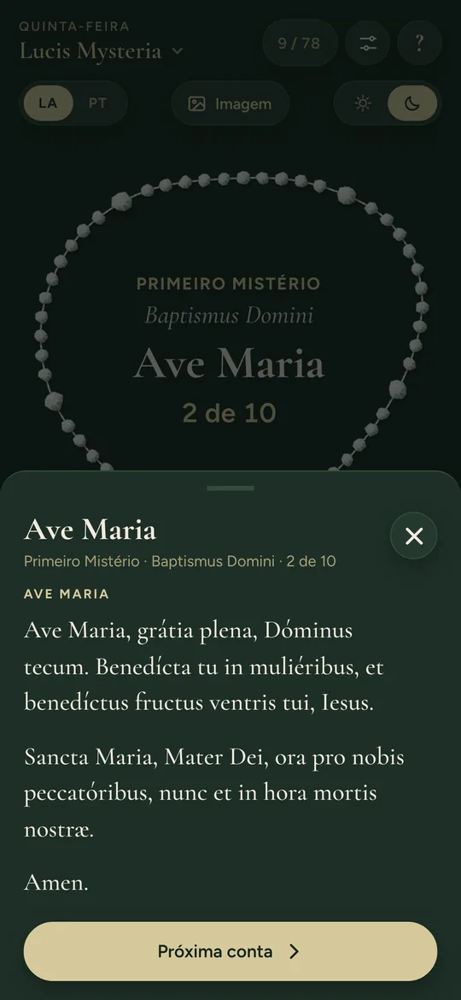
Textos longos
O texto rola sozinho
Nas orações maiores, como a Ladainha, um botão ao lado do texto faz ele rolar sozinho. Você escolhe a velocidade.
Uma barra dourada mostra que ainda há texto para ler.
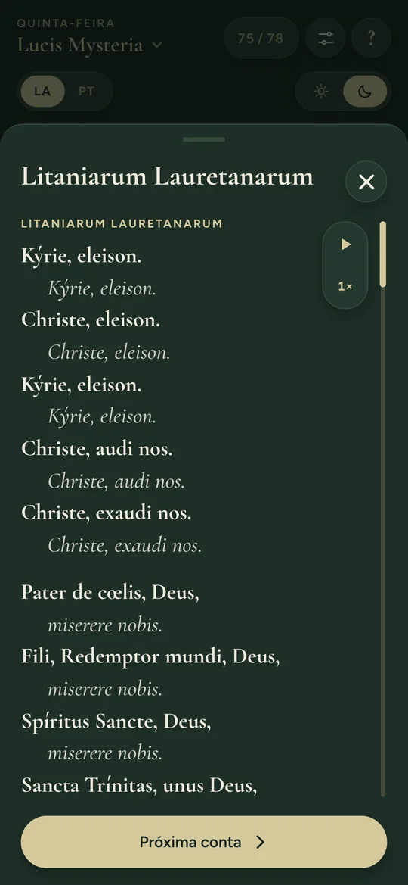
Mistérios
Os Mistérios do dia, sem pensar
O aplicativo já abre com os Mistérios do dia da semana: Gozosos, Dolorosos, Gloriosos ou Luminosos.
Quer rezar outros? Toque no nome, no alto da tela, e escolha.
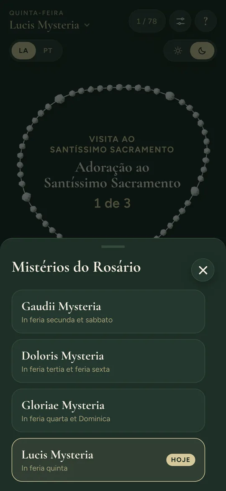
Contemplar
Uma pintura para cada Mistério
Durante cada Mistério, toque em Imagem para ver uma pintura clássica que ajuda a contemplar a cena.
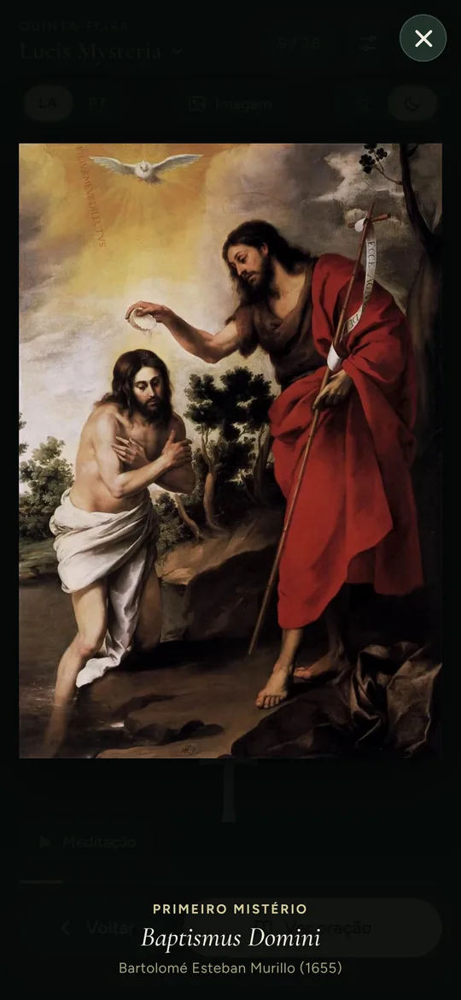
Ouvir
Meditação e Auxílio
Toque em ▶ Meditação para ouvir a meditação do Mistério, segundo os escritos de São Josemaria Escrivá no livro “Santo Rosário”.
Em alguns momentos aparece o ▶ Auxílio: um áudio para lhe acompanhar na oração.
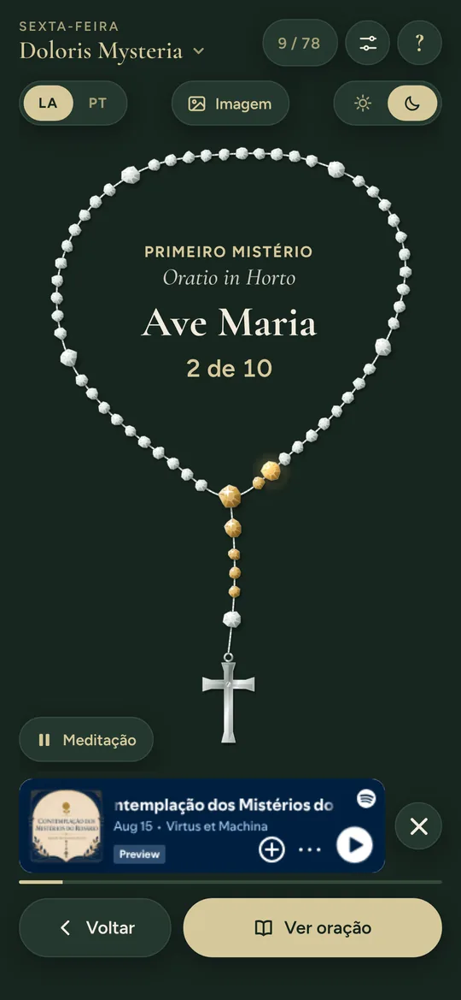
Sons
Uma pedrinha, um sininho
Cada toque faz o som de uma pedrinha. No fim de cada dezena, um sininho avisa que chegou o Glória ao Pai.
Para rezar em silêncio, desligue o som nos Ajustes.
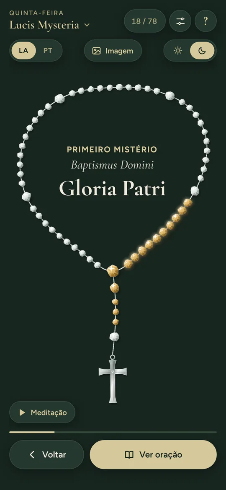
Momento especial
Comunhão Espiritual
Depois da visita ao Santíssimo, aparece o ostensório iluminado, com o texto da Comunhão Espiritual.
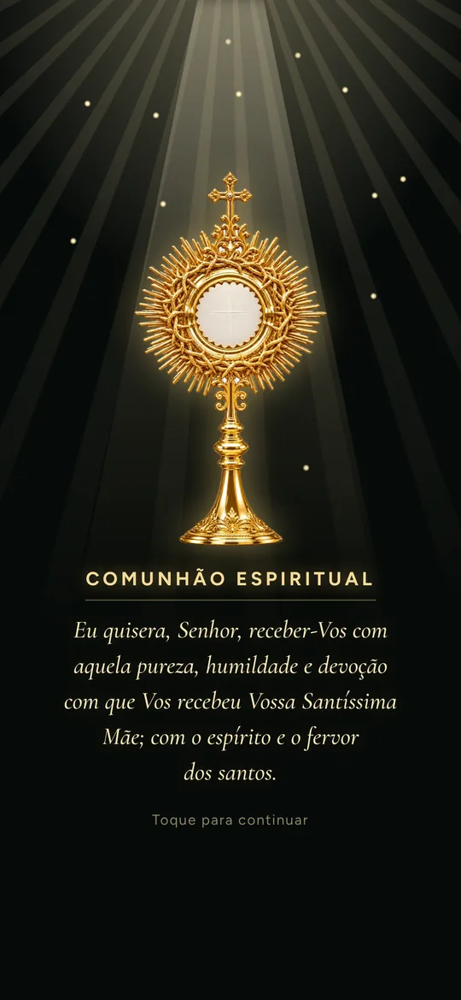
Navegar
Vá direto a qualquer parte
Toque no contador, por exemplo 9 / 78, para ver a lista de todo o terço e ir direto para onde quiser.
O aplicativo também guarda onde você parou: pode fechar e voltar depois.
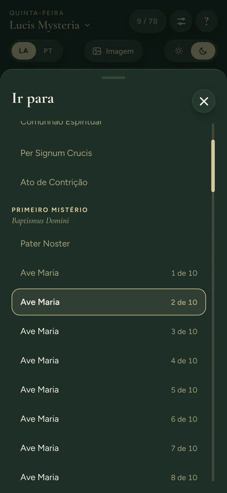
Do seu jeito
Tela clara ou escura
No alto, o ☀ / ☾ troca entre a tela clara, com contas de esmeralda, e a tela escura, com contas de diamante.
Nos Ajustes você liga ou desliga o som e a vibração, e pode recomeçar o terço.
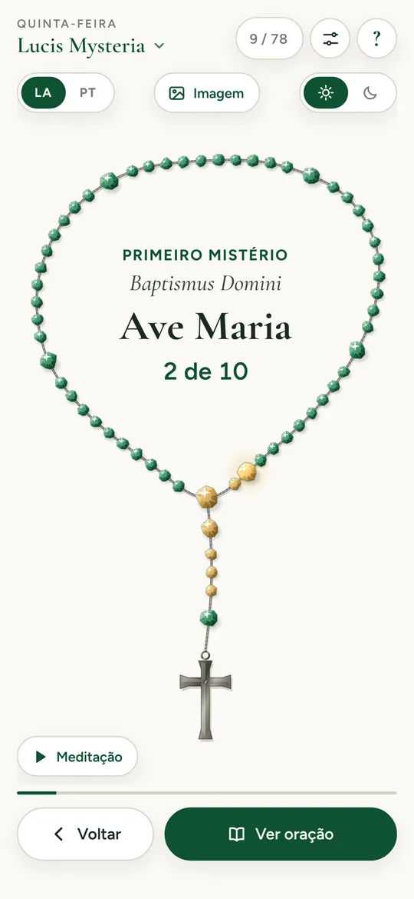
Ajuda
Ficou com dúvida?
Toque no ?, no canto de cima. Abre um passo a passo bem simples, com letras grandes.
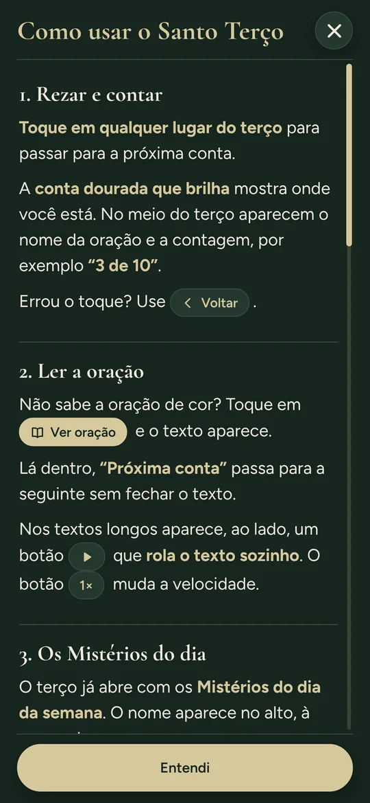
Ao terminar
A Rosa de Rialp
No fim do terço aparece uma rosa dourada com uma frase de São Josemaria sobre o amor a Nossa Senhora.
Depois, o terço recomeça no mesmo Mistério, até que você troque.
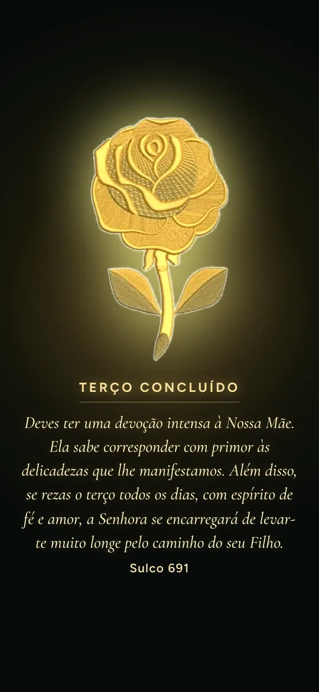
Deixe na tela do celular
Assim ele abre como um aplicativo, com o ícone da rosa dourada.
No iPhone
- Abra o Santo Terço no Safari.
- Toque no botão Compartilhar (o quadrado com a seta para cima).
- Escolha Adicionar à Tela de Início.
No Android
- Abra o Santo Terço no Chrome.
- Toque nos três pontinhos, no canto de cima.
- Escolha Adicionar à tela inicial ou Instalar aplicativo.
Este aplicativo tem o objetivo de aumentar o nosso amor a Maria, para a maior glória de Deus.
“Se rezas o terço todos os dias, com espírito de fé e amor, a Senhora se encarregará de levar-te muito longe pelo caminho do seu Filho.”São Josemaria Escrivá · Sulco 691